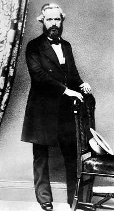

Seratus Tokoh yang Paling Berpengaruh dalam
Sejarah
11. KARL MARX (1818 - 1883)
Karl Marx, pelopor utama gagasan "sosialisme ilmiah" dilahirkan tahun 1818 di kota Trier, Jerman, Ayahnya ahli hukum dan di umur tujuh belas tahun Karl masuk Universitas Bonn,juga belajar hukum. Belakangan dia pindah ke Universitas Berlin dan kemudian dapat gelar Doktor dalam ilmu filsafat dari Universitas Jena.
Entah karena lebih tertarik, Marx menceburkan diri ke dunia jurnalistik dan sebentar menjadi redaktur Rheinische Zeitung di Cologne. Tapi, pandangan politiknya yang radikal menyeretnya ke dalam rupa-rupa kesulitan dan memaksanya pindah ke Paris. Di situlah dia mula pertama bertemu dengan Friederich Engels. Tali persahabatan dan persamaan pandangan politik mengikat kedua orang ini selaku dwi tunggal hingga akhir hayatnya.
Marx tak bisa lama tinggal di Paris dan segera ditendang dari sana dan mesti menjinjing koper pindah ke Brussel. Di kota inilah, tahun 1847 dia pertama kali menerbitkan buah pikirannya yang penting dan besar The poverty of philosophy (Kemiskinan filsafat). Tahun berikutnya bersama bergandeng tangan dengan Friederich Engels mereka menerbitkan Communist Manifesto, buku yang akhirnya menjadi bacaan dunia. Pada tahun itu juga Marx kembali ke Cologne untuk kemudian diusir lagi dari sana hanya selang beberapa bulan. Sehabis terusir sana terusir sini, akhirnya Marx menyeberang Selat Canal dan menetap di London hingga akhir hayatnya.
Meskipun ada hanya sedikit uang di koceknya berkat pekerjaan jurnalistik, Marx menghabiskan sejumlah besar waktunya di London melakukan penyelidikan dan menulis buku-buku tentang politik dan ekonomi. (Di tahun-tahun itu Marx dan familinya dapat bantuan ongkos hidup dari Friederich Engels kawan karibnya). Jilid pertama Das Kapital, karya ilmiah Marx terpenting terbit di tahun 1867. Tatkala Marx meninggal di tahun 1883, kedua jilid sambungannya belum sepenuhnya rampung. Kedua jilid sambungannya itu disusun dan diterbitkan oIeh Engels berpegang pada catatan-catatan dan naskah yang ditinggalkan Marx.
Karya tulisan Marx merumuskan dasar teoritis Komunisme. Ditilik dari perkembangan luarbiasa gerakan ini di abad ke-20, sangat layaklah kalau dia mendapat tempat dalam urutan tinggi buku ini. Masalahnya, seberapa tinggi?
Faktor utama bagi keputusan ini adalah perhitungan arti penting Komunis jangka panjang dalam sejarah. Sejak tumbuhnya Komunisme sebagai bagian tak terpisahkan dari sejarah masa kini, terasa sedikit sulit menentukan dengan cermat perspektif masa depannya. Kendati tak seorang pun sanggup memastikan seberapa jauh Komunisme bisa berkembang dan berapa lama ideologi ini bisa bertahan, yang sudah pasti dia merupakan ideologi kuat dan tangguh serta berakar kuat menghunjam ke bumi, dan sudah bisa dipastikan punya pengaruh besar di dunia untuk paling sedikit beberapa abad mendatang.
Pada saat kini, sekitar seabad sesudah kematian Marx, jumlah manusia yang sedikitnya terpengaruh oleh Marxisme sudah mendekati angka 1,3 milyar banyaknya. Jumlah penganut ini lebih besar dari jumlah penganut ideologi mana pun sepanjang sejarah manusia. Bukan sekedar jumlahnya yang mutlak, melainkan juga sebagai kelompok dari keseluruhan penduduk dunia. Ini mengakibatkan kaum Komunis, dan juga sebagian yang bukan Komunis, percaya bahwa di masa depan tidak bisa tidak Marxisme akan merebut kemenangan di seluruh dunia. Namun, adalah sukar untuk memantapkan kebenarannya dengan keyakinan yang tak bergoyah. Telah banyak contoh-contoh ideologi yang tampaknya sangat punya pengaruh penting pada jamannya tapi pada akhirnya melayu dan sirna. (Agama yang didirikan oleh Mani bisa dijadikan misal yang menarik). Jika kita surut ke tahun 1900, akan tampak jelas bahwa demokrasi konstitusional merupakan arus yang akan jadi anutan masa depan. Berpegang pada harapan, tampaknya memang begitu, tapi sekarang tak ada lagi orang yang yakin segalanya sudah terjadi sebagaimana bayangan semula.
Sekarang menyangkut Komunisme. Taruhlah seseorang percaya sangat dan tahu persis betapa hebatnya pengaruh Komunis di dunia saat ini dan di dunia masa depan, orang toh masih mempertanyakan arti penting Karl Marx di dalam gerakan Komunis. Politik pemerintah Uni Soviet sekarang kelihatannya tidak terawasi oleh karya-karya Marx yang menulis dasar-dasar pikiran seperti dialektika gaya Hegel dan tentang teori "nilai lebih." Teori-teori itu kelihatan kecil pengaruhnya dalam praktek perputaran roda politik pemerintah Uni Soviet, baik politik dalam maupun luar negerinya.
Komunisme masa kini menitikberatkan empat ide: (1) Sekelumit kecil orang kaya hidup dalam kemewahan yang berlimpah, sedangkan kaum pekerja yang teramat banyak jumlahnya hidup bergelimang papa sengsara. (2) Cara untuk merombak ketidakadilan ini adalah dengan jalan melaksanakan sistem sosialis, yaitu sistem di mana alat produksi dikuasai negara dan bukannya oleh pribadi swasta. (3) Pada umumnya, satu-satunya jalan paling praktis untuk melaksanakan sistem sosialis ini adalah lewat revolusi kekerasan. (4) Untuk menjaga kelanggengan sistem sosialis harus diatur oleh kediktatoran partai Komunis dalam jangka waktu yang memadai.
Tiga dari ide pertama sudah dicetuskan dengan jelas sebelum Marx. Sedangkan ide keempat berasal dari gagasan Marx mengenai "diktatur proletariat." Sementara itu, lamanya masa berlaku kediktatoran Soviet sekarang lebih merupakan hasil dari langkah-langkah Lenin dan Stalin daripada gagasan tulisan Marx. Hal ini tampaknya menimbulkan anggapan bahwa pengaruh Marx dalam Komunisme lebih kecil dari kenyataan yang sebenarnya, dan penghargaan orang terhadap tulisan-tulisannya lebih menyerupai sekedar etalasi untuk membenarkan sifat "keilmiahan" daripada ide dan politik yang sudah terlaksana dan diterima.
Sementara boleh jadi ada benarnya juga anggapan itu, namun tampaknya kelewat berlebihan. Lenin misalnya, tidak sekedar menganggap dirinya mengikuti ajaran-ajaran Marx, tapi dia betul-betul membacanya, menghayatinya, dan menerimanya. Dia yakin betul jalan yang dilimpahkannya persis di atas rel yang dibentangkan Marx. Begitu juga terjadi pada diri Mao Tse Tung dan pemuka-pemuka Komunis lain. Memang benar, ide-ide Marx mungkin sudah disalah-artikan dan ditafsirkan lain, tapi hal semacam ini juga berlaku pada ajaran Yesus atau Buddha atau Islam. Andaikata semua politik dasar pemerintah Tiongkok maupun Uni Soviet bertolak langsung dari hasil karya tulisan Marx, dia akan peroleh tingkat urutan lebih tinggi dalam daftar buku ini.
Mungkin bisa diperdebatkan bahwa Lenin, politikus praktis yang sesungguhnya mendirikan negara Komunis, memegang saham besar dalam hal membangun Komunisme sebagai suatu ideologi yang begitu besar pengaruhnya di dunia. Pendapat ini masuk akal. Lenin benar-benar seorang tokoh penting. Tapi, menurut hemat saya, tulisan-tulisan Marx yang begitu hebat pengaruhnya terhadap jalan pikiran bukan saja Lenin tapi juga pemuka-pemuka Komunis lain, jelas punya kedudukan lebih penting.
Juga ada peluang untuk diperdebatkan apakah penghargaan atas terumusnya Marxisme tidak harus dibagi antara Karl Marx dan Friederich Engels. Mereka berdua menulis "Manifesto Komunis" dan Engels jelas punya pengaruh mendalam terhadap penyelesaian final Das Kapital. Meskipun masing-masing menulis buku atas namanya sendiri-sendiri tapi kerjasama intelektual mereka begitu intimnya sehingga hasil keseluruhan dapat dianggap sebagai suatu karya bersama. Memang, Marx dan Engels diperlakukan sebagai satu kesatuan dalam buku ini walaupun yang dicantumkan cuma nama Marx karena (saya pikir saya benar) dia dianggap partner yang dominan dalam arti luas.
Akhirnya, sering dituding orang bahwa teori Marxis di bidang ekonomi sangatlah buruk dan banyak keliru. Tentu saja, banyak dugaan-dugaan tertentu Marx terbukti meleset. Misalnya, Marx meramalkan bahwa dalam negeri-negeri kapitalis kaum buruh akan semakin melarat dalam perjalanan sang waktu. Jelas, ramalan ini tidak terbukti. Marx juga memperhitungkan bahwa kaum menengah akan disapu dan sebagian besar orang-orangnya akan masuk ke dalam golongan proletar dan hanya sedikit yang bisa bangkit dan masuk dalam kelas kapitalis. Ini pun jelas tak pernah terbukti. Marx juga tampaknya percaya, meningkatnya mekanisasi akan mengurangi keuntungan kaum kapitalis, kepercayaan yang bukan saja salah tapi sekaligus juga tampak tolol. Tapi, terlepas apakah teori ekonominya benar atau salah, semua itu tidak ada sangkut-pautnya dengan pengaruh Marx. Arti penting seorang filosof terletak bukan pada kebenaran pendapatnya tapi terletak pada masalah apakah buah pikirannya telah menggerakkan orang untuk bertindak atau tidak. Diukur dari sudut ini, tak perlu diragukan lagi Karl Marx punya arti penting yang luarbiasa hebatnya.
Seratus Tokoh yang Paling Berpengaruh dalam Sejarah
Michael H. Hart, 1978
Terjemahan H. Mahbub Djunaidi, 1982
PT. Dunia Pustaka Jaya
Jln. Kramat II, No. 31A
Jakarta Pusat